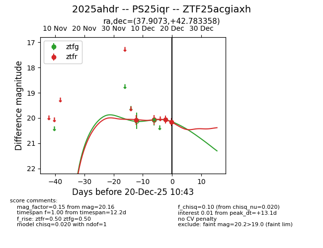
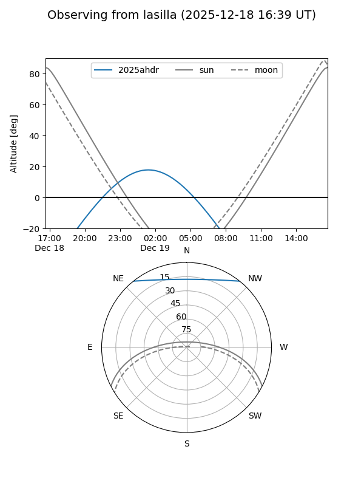
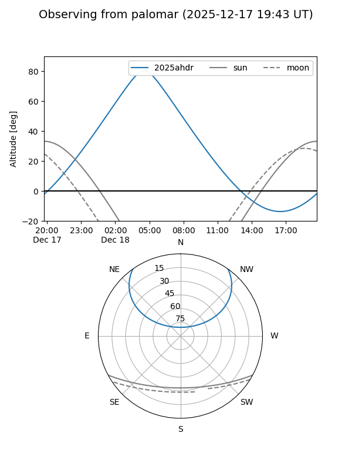

2025ahdr
Target 2025ahdr at 2025-12-18 11:18
Aliases and brokers:
FINK: fink-portal.org/ZTF25acgiaxh
Lasair: lasair-ztf.lsst.ac.uk/objects/ZTF25acgiaxh
ALeRCE: alerce.online/object/ZTF25acgiaxh
TNS: wis-tns.org/object/2025ahdr
YSE: ziggy.ucolick.org/yse/transient_detail/2025ahdr
alt names
ZTF25acgiaxh (ztf,fink_ztf)
2025ahdr (tns,yse)
PS25iqr (panstarrs)
Coordinates:
equatorial (ra, dec) = 37.9073,+42.78336
equatorial (HMS+DMS) = 02:31:37.75,+42:47:00.09
galactic (l, b) = (141.8293,-16.38201)
Photometry
last ztfg=20.08, ztfr=20.07
1 ztfg, 1 ztfr detections
Lightcurve

Visibility


Additional plots